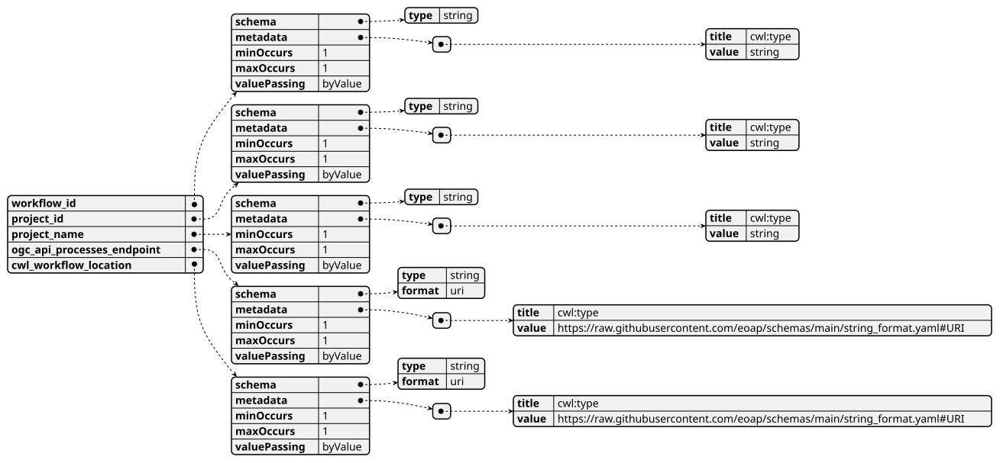
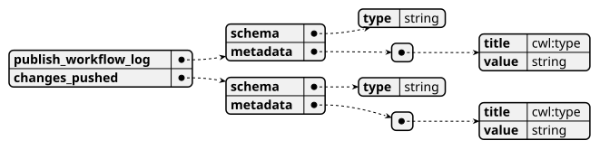
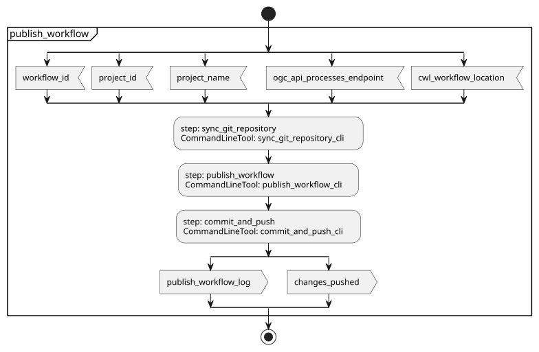
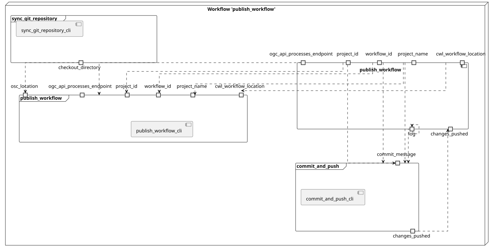
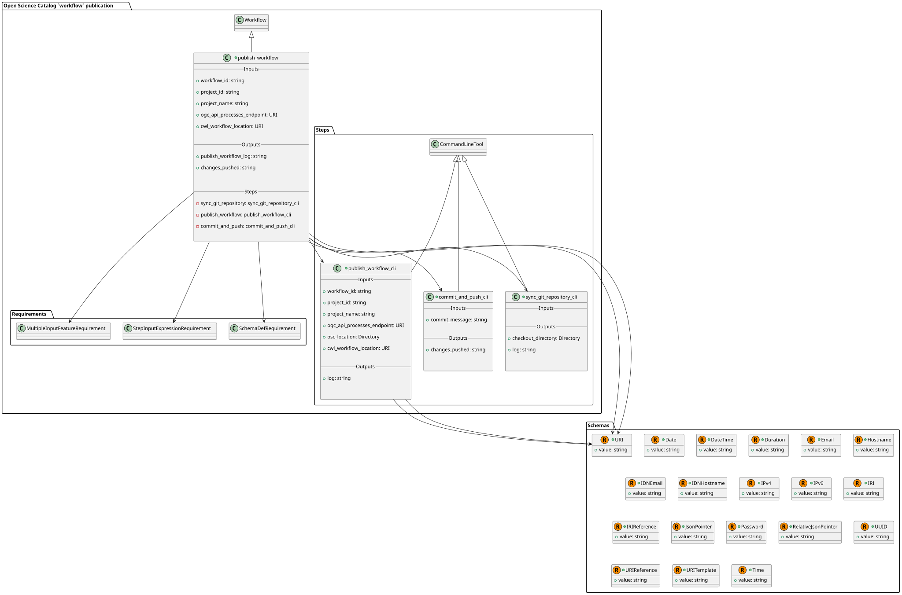
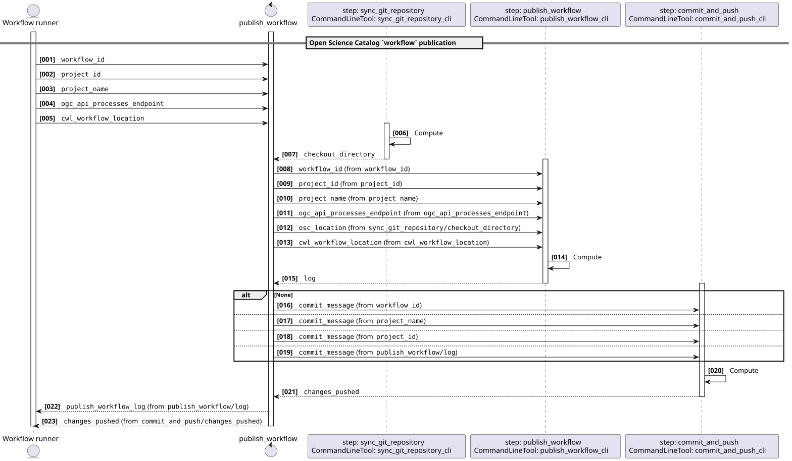
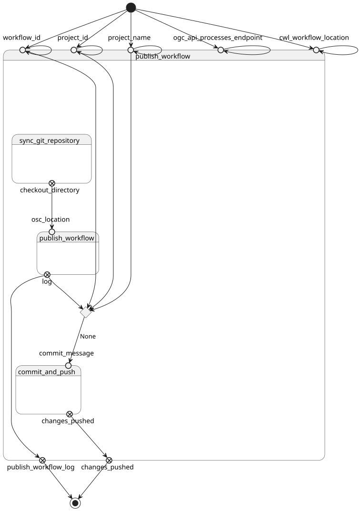

OSC Client - Publish workflow v0.1.0
ESA Open Science Catalog Client
This software is licensed under the terms of the Apache License 2.0 license - SPDX short identifier: Apache-2.0
2026-05-12 - 2026-05-21T15:35:26.453 Copyright Terradue Srl - > https://ror.org/0069cx113
Project Team
Authors
| Name | Organization | Role | Identifier | |
|---|---|---|---|---|
| Brito, Fabrice | fabrice.brito@terradue.com | Terradue | Project Manager | https://orcid.org/0009-0000-1342-9736 |
| Tripodi, Simone | simone.tripodi@terradue.com | Terradue | Project Leader | https://orcid.org/0009-0006-2063-618X |
Contributors
The are no contributors for this project.
User Manual
User Manual can be found on https://terradue.github.io/osc-metadata-client/.
Runtime environment
Supported Operating Systems
- Linux
- MacOS X
Requirements
Software Source code
- Browsable version of the source repository;
- Continuous integration system used by the project;
- Issues, bugs, and feature requests should be submitted to the following issue management system for this project
publish_workflow
CWL Class
Requirements
Inputs
| Id | Type | Label | Doc |
|---|---|---|---|
workflow_id |
string | None | None |
project_id |
string | None | None |
project_name |
string | None | None |
ogc_api_processes_endpoint |
URI:
|
None | None |
cwl_workflow_location |
URI:
|
None | None |
Steps
| Id | Runs | Label | Doc |
|---|---|---|---|
| sync_git_repository | #sync_git_repository_cli |
None | None |
| publish_workflow | #publish_workflow_cli |
None | None |
| commit_and_push | #commit_and_push_cli |
None | None |
Outputs
| Id | Type | Label | Doc |
|---|---|---|---|
publish_workflow_log |
string | None | None |
changes_pushed |
string | None | None |
OGC API - Processes
When publish_workflow Workflow is exposed through OGC API - Processes - Part 1: Core, inputs and outputs fields below represent the interface of the getProcessDescription API.
Inputs

Outputs

UML Diagrams
Activity diagram
Learn more about the Activity diagram below.

Component diagram
Learn more about the Component diagram below.

Class diagram
Learn more about the Class diagram below.

Sequence diagram
Learn more about the Sequence diagram below.

State diagram
Learn more about the State diagram below.

Run in step
sync_git_repository
sync_git_repository_cli
CWL Class
Inputs
| Id | Option | Type |
|---|---|---|
Execution usage example:
bash sync_git_repository_cli.sh \
Run in step
publish_workflow
publish_workflow_cli
CWL Class
Inputs
| Id | Option | Type |
|---|---|---|
workflow_id |
--id |
string |
project_id |
--project-id |
string |
project_name |
--project-name |
string |
ogc_api_processes_endpoint |
--ogc-api-processes-endpoint |
URI:
|
osc_location |
--output |
Directory |
cwl_workflow_location |
--cwl_workflow_location |
URI:
|
Execution usage example:
osc-metadata-client <ARGUMENT_DYNAMICALLY_SET> \
--id <WORKFLOW_ID> \
--project-id <PROJECT_ID> \
--project-name <PROJECT_NAME> \
--ogc-api-processes-endpoint <OGC_API_PROCESSES_ENDPOINT> \
--output <OSC_LOCATION> \
--cwl_workflow_location <CWL_WORKFLOW_LOCATION>
Run in step
commit_and_push
commit_and_push_cli
CWL Class
Inputs
| Id | Option | Type |
|---|---|---|
commit_message |
--commit_message |
string |
Execution usage example:
bash commit_and_push_cli.sh \
--commit_message <COMMIT_MESSAGE>